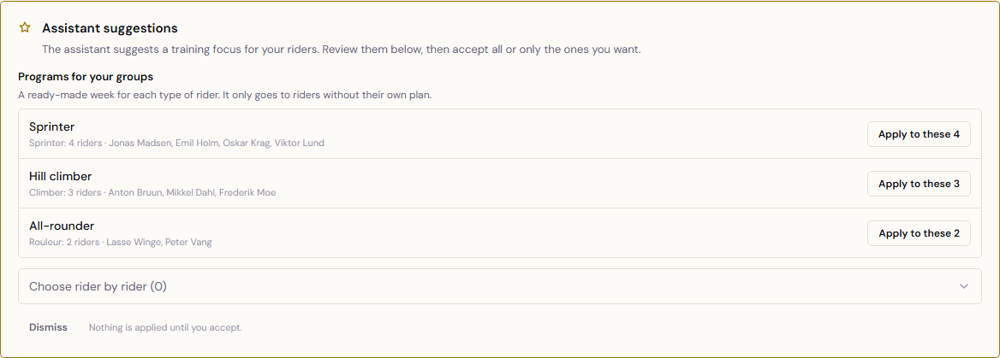
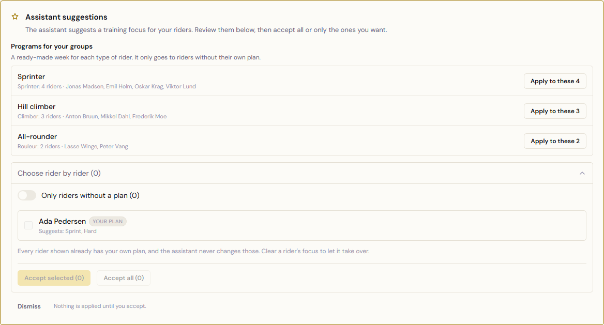
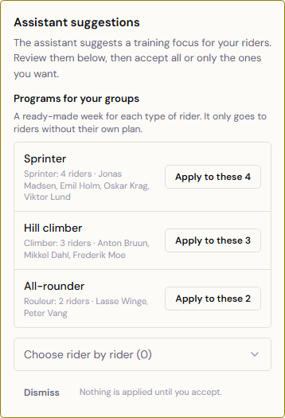

Lokal build af PR-branchen med testdata. Rytterne er opdigtede; kun Ada Pedersen findes i testdata, derfor står rytterlisten med 1 rytter og "(0)".
Desktop 1440: som spilleren ser det først

Desktop 1440: "Choose rider by rider" foldet ud

Mobil 390
